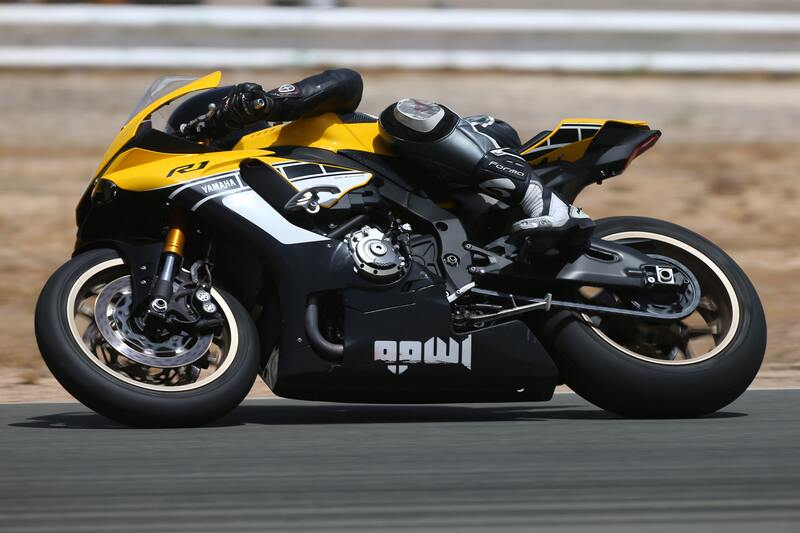
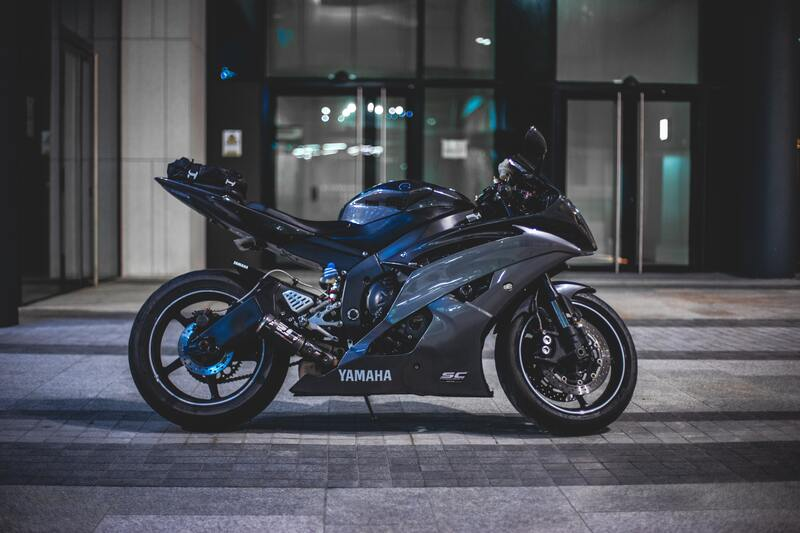
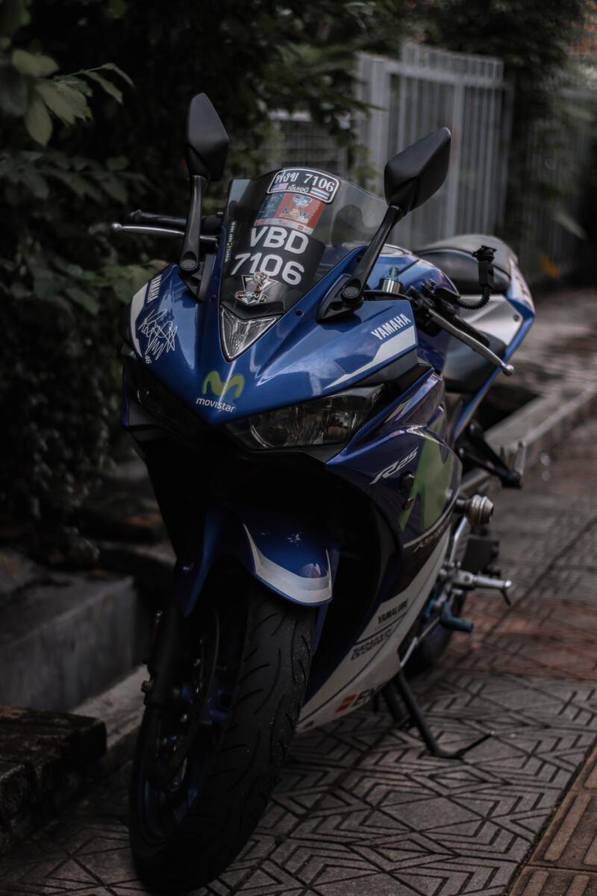
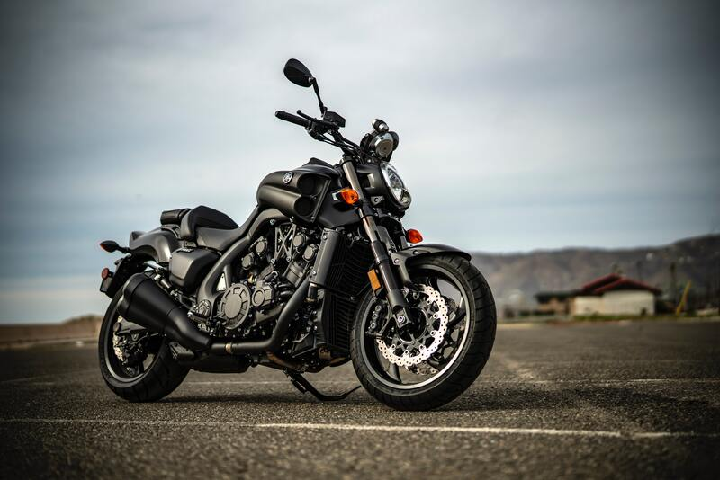

01
Yamaha R1M
The Yamaha YZF-R1, or R1, is a 1,000 cc class sport bike made by Yamaha since 1998。

Yamaha R1 in Race Track
Yamaha launched the YZF-R1 after redesigning the Genesis engine to create a more compact engine by raising the gearbox input shaft and allowing the gearbox output shaft to be placed beneath it. This 'stacked gearbox' was followed by other manufacturers. Compacting the engine made the engine much shorter, allowing the wheelbase to be shortened. This allowed the frame design to place the weight of the engine in the frame to aid handling because of an optimized center of gravity. The swingarm could be made longer without compromising the overall wheelbase, which was a short 1,385 mm (54.5 in). Four 40 mm Keihin CV carburetors fed fuel to the engine. It had KYB upside down 41 mm front forks and 300 mm semi-floating disk brakes. The instrument panel was electrical with a self diagnosis system and digital speed readout. The exhaust system used Yamaha's Exhaust Ultimate Power Valve (EXUP), which controlled the exhaust gas flow to maximize engine power production at all revs. This created a high powered and high torque engine. The Yamaha YZF-R6 was introduced in 1999 as the 600 cc version of the R1 super bike.
02
Yamaha R6
The Yamaha YZF-R6 is a Yamaha 600 class sport bike motorcycle, first introduced in 1999, updated in 2001, 2003, 2006, 2008, 2017, and revised in the years in between.

Yamaha R6 knight rider
The YZF-R6 was introduced in 1999 as the super sport version of YZF-R1 super bike, and as a companion to the more street-oriented YZF600R sport bike which continued to be sold alongside the R6. The motorcycle featured Yamaha's completely new engine design capable of producing over 108 hp (81 kW) while stationary. The R6 was the world's first 600cc production four-stroke motorcycle producing over 100 hp (75 kW) in stock form. 2006 YZF-R6 The YZF-R6 has been revised several times since its introduction. Starting with the 2003 model, when the R6 became fuel-injected. The 2006 model year was a significant upgrade with a new engine management system featuring the YCC-T ride by wire throttle and a multi-plate slipper clutch. The 2008 model incorporated the YCC-I variable-length intake system to optimize power at high engine rpm and an improved Deltabox frame design.
03
Yamaha R25
Engine: 249 cc (15.2 cu in) liquid-cooled 4-stroke 8-valve DOHC inline-twin.

Yamaha R25 in parking stand.
The Yamaha YZF-R25 is a motorcycle manufactured by Yamaha since 2014. It is Yamaha's first 250 cc sport motorcycle since the four-cylinder FZR250 that was sold between 1986 and 1994. A first for Yamaha twins, in common with the R3, the R25 uses an offset cylinder design.The YZF-R25 was updated for 2019.
04
Yamaha Vmax
The Yamaha V-Max, is a cruiser motorcycle made by Yamaha since 1985, known for its powerful 70° V4 engine, shaft drive, and distinctive styling.

Yamaha Vmax in Countryside.
The V-Max was designed by Atsushi Ichijo in a team led by Akira Araki with input from Ed Burke and John Reed. Upon its release in 1985, the V-Max garnered instant critical acclaim and earned the title "Bike of the Year" from Cycle Guide.[6] Sold both in Japan and abroad, the V-Max was sold with only minor modifications from the 1985 model year until the 2007 model year. The V-Max was noted for its quick acceleration, but was also criticized for its poor cornering ability and soft suspension. In 1997, the bike cost £9,359 or $15,322 (equivalent to $24,701 in 2020) to purchase. Until 2008, the original V-Max was offered for sale through the Star Motorcycles division of Yamaha Motorcycles. Apart from a minor freshening to the bike's specifications in 1993, when the bike gained a larger-diameter fork to minimize high-speed wobbling and drift, four-piston brake calipers, and other handling and safety related upgrades, the 2007 V-Max was almost the same as the original 1985 version.